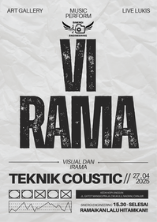
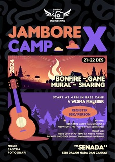
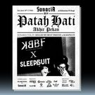

VIRAMA mencerminkan sinergi antara tiga bidang seni: lukisan, fotografi, dan musik. "VI" mewakili seni visual yang mencakup lukisan dan fotografi sebagai bentuk ekspresi visual, sedangkan "RAMA" berasal dari kata irama, yang melambangkan musik sebagai ekspresi auditori.Dalam acara VIRAMA, seni tidak hanya dipamerkan tetapi juga saling berinteraksi—lukisan dan foto menangkap keindahan yang kemudian diterjemahkan dalam bentuk nada dan irama musik. Dengan tema ini, setiap karya dari berbagai bidang seni dapat berpadu untuk menciptakan pengalaman yang lebih mendalam dan menyeluruh bagi penikmatnya.
"SENADA" (Seni dalam Nada dan Cahaya) Singkatan ini menggambarkan sinergi antara seni suara (musik) dan visual (fotografi dan seni rupa), dengan kata "Senada" yang juga bermakna keselarasan atau harmoni, mencerminkan kolaborasi yang diusung dalam tema tersebut. Tema "Seni dalam Nada dan Cahaya: Merangkai Visual dan Suara" menyoroti hubungan harmonis antara musik dan seni visual, termasuk fotografi. Dengan menggunakan konsep cahaya sebagai simbol visual dalam fotografi dan seni rupa, serta nada sebagai elemen utama dalam musik, tema ini mengajak para peserta untuk menciptakan karya yang menggabungkan ketiga dunia.
ARAH RUANG - Road to Cianjuran Fest 2024 Berbagai sektor ekraf cianjur (komunitas-media-pelaku usaha) meminta izin untuk melanjutkan perjuangan teman2 agar generasi muda tidak lupa dengan daerah kelahirannya & bisa mengembangkan ekosistem kreatif di Cianjur. Live Mural | Workshop | Talkshow | Exhibition | Food Tenant | Special Performance Sabtu, 10 Agustus 2024 15.00 - 22.00 WIB
Berjarak 2 dekade sejak gelombang kesedihan menyapu skena musik tanah air, akhir juli ini sorot lampu Sonaria jatuh pada 2 band lintas generasi dalam sebuah perayaan. Perayaan untuk setiap bentuk penolakan, untuk segala bentuk keterpurukan, untuk semua cinta yang bertepuk sebelah tangan. Untuk semua hati yang patah Sonaria mempersembahkan: KILLED BY BEST FRIEND x SLEEPSUIT : Patah Hati Akhir Pekan Sabtu
TTK Teka Teki Kehidupan! Tua Tua Keledai present Workshop kehidupan bersama Narpati Awangga a.k.a @oomleo dan juga ada teman-teman dari @ngawitan.ruangtumbuh yang akan menampilkan pertunjukan dari karya “Aria Wangsa Goparana” sambil ditemani alunan lagu dari @selektariaa Diskusi bareng @oomleo di workshop kehidupan yuk!